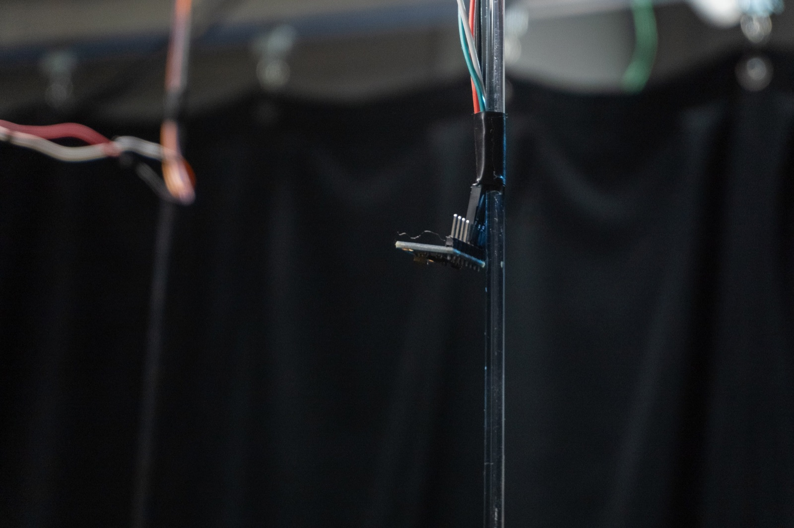
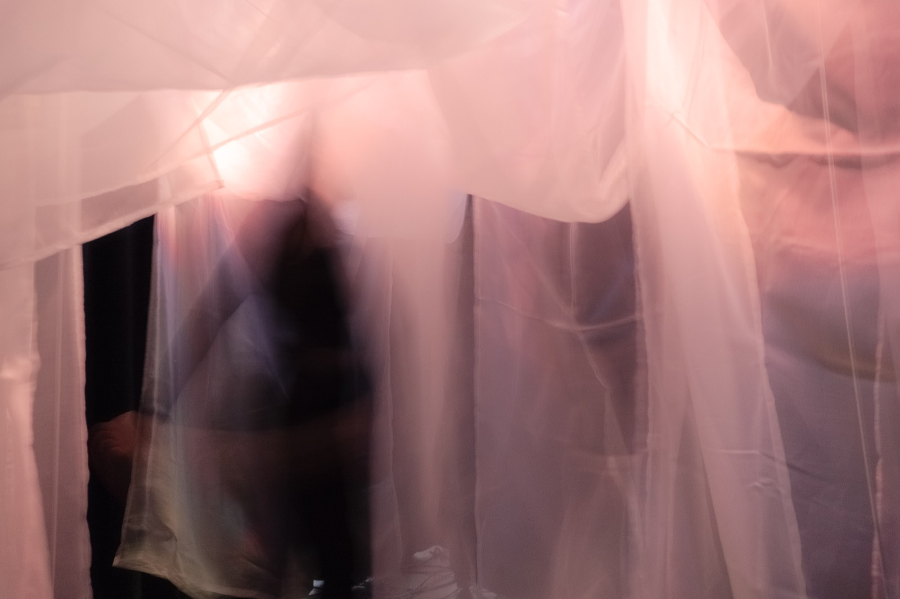
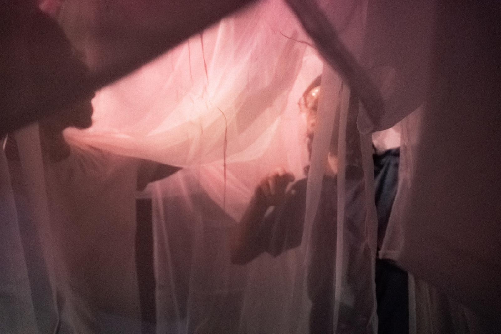
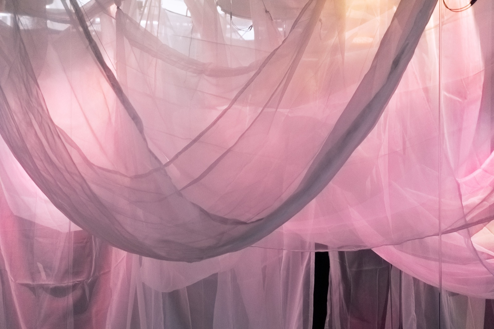
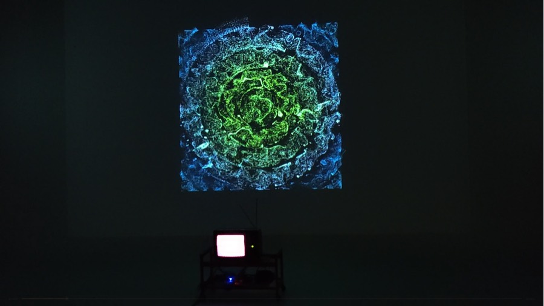

Cliquer pour regarder
Installations interactives
(8/22)
Des bâtons transparents suspendus au plafond : en les frôlant, les visiteurs deviennent co-créateurs du son et de l'espace.
Impressions est une installation interactive conçue et créée par Jean-Christophe Zephir, Meryem Berbiche et Dominic Roberts. Elle propose un dialogue entre l'humain et la technologie.
En touchant les bâtons, les visiteurs transforment subtilement leur environnement immédiat : un lien presque organique se crée entre eux et la technologie qui les entoure.
(Fonctionnement)
Ce qui se passe quand un visiteur entre en contact avec l'œuvre.
Les visiteurs entrent en collision avec des bâtons transparents suspendus. Des capteurs gyroscopiques et de vibration détectent ces mouvements et déclenchent le son.

Un système sonore surround génératif, diffusé par des haut-parleurs tout autour de l'espace, réagit en temps réel aux gestes. Chaque interaction produit une ambiance ambisonique unique.


Des motifs simples sont projetés sur les rideaux accrochés au plafond. La lumière ajoute une couche d'ambiance sans détourner l'attention des bâtons.

Images8 photos
